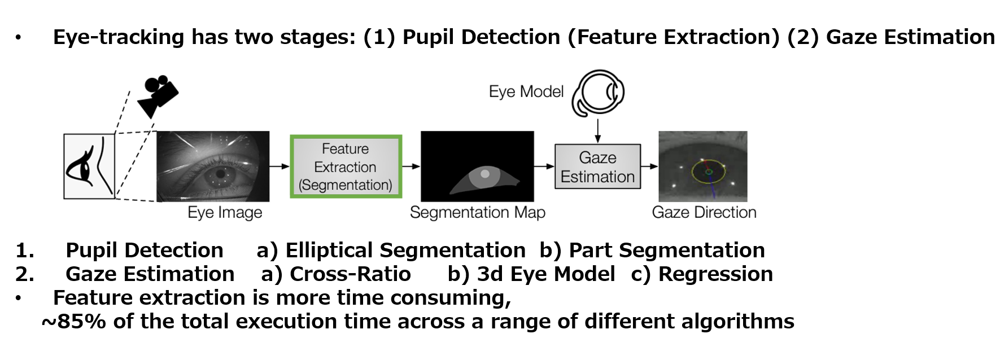
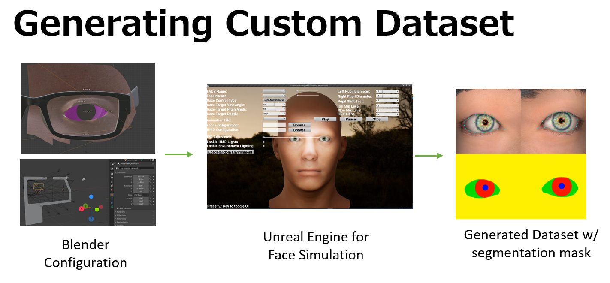
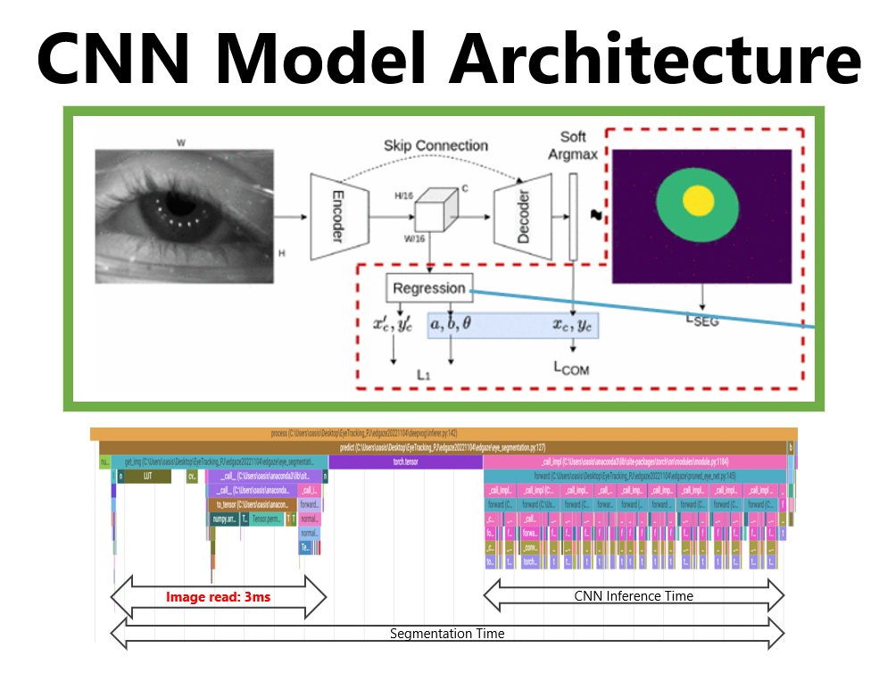
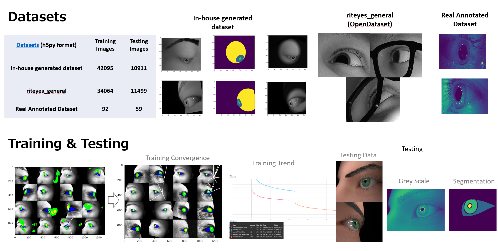
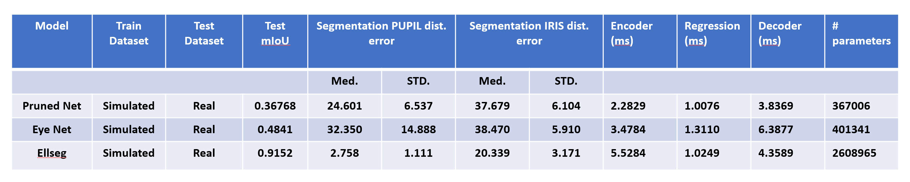

Gaze Estimation for Foveated Rendering in AR/VR
Gaze estimation system optimized for mobile SoC deployment in AR/VR headsets. Built a synthetic dataset generation pipeline to overcome real-data scarcity, trained lightweight models for real-time inference, and integrated with foveated rendering to reduce GPU workload while maintaining perceived visual quality.

Eye-tracking operates in two sequential stages, with feature extraction consuming the majority of computation time.


Skip connections preserve fine-grained spatial detail through the bottleneck for precise localization.
Differentiable coordinate extraction enables end-to-end training with sub-pixel precision.
Predicts ellipse parameters (x_c, y_c, a, b, θ) for pupil and iris localization.
Multi-task learning with segmentation, center-of-mass, and regression objectives.

| Dataset | Training Images | Testing Images |
|---|---|---|
| In-house Generated | 42,095 | 10,911 |
| riteyes_general (OpenDataset) | 34,064 | 11,499 |
| Real Annotated Dataset | 92 | 59 |

| Model | Train | Test | mIoU | Pupil Dist. (Med/STD) | Iris Dist. (Med/STD) | Encoder (ms) | Regression (ms) | Decoder (ms) | # Params |
|---|---|---|---|---|---|---|---|---|---|
| Pruned Net | Sim | Real | 0.368 | 24.6 / 6.5 | 37.7 / 6.1 | 2.28 | 1.01 | 3.84 | 367K |
| Eye Net | Sim | Real | 0.484 | 32.4 / 14.9 | 38.5 / 5.9 | 3.48 | 1.31 | 6.39 | 401K |
| Ellseg | Sim | Real | 0.915 | 2.8 / 1.1 | 20.3 / 3.2 | 5.53 | 1.02 | 4.36 | 2.6M |
Lightweight models with as few as 367K parameters, designed for deployment on mobile SoC hardware in AR/VR headsets.
Automated Blender + Unreal Engine pipeline generates unlimited training data with segmentation masks, overcoming real-data scarcity.
Integration with foveated rendering reduces GPU workload by rendering full resolution only where the user is looking.
Total inference time under 10ms achievable, enabling real-time gaze tracking at interactive frame rates.